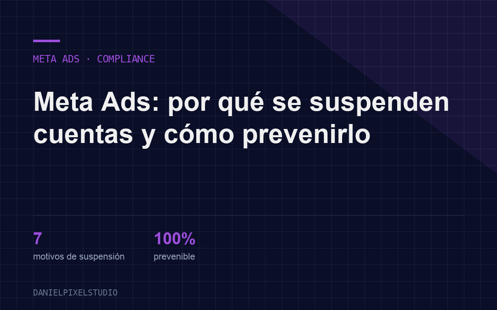

Blog · Meta Ads
Why does Meta suspend ad accounts? The 7 most common reasons and how to prevent them
A suspended account can stop campaigns, hurt sales and put a company's entire advertising ecosystem at risk. Prevention starts long before the first ad goes live.

A suspended ad account can stop campaigns, disrupt lead generation, reduce sales and put a company's digital operation at risk.
That is why understanding why Meta suspends ad accounts is essential for any business that uses Facebook and Instagram as acquisition channels.
Restrictions can relate to ads, landing pages, payment methods, security, account behavior or repeated violations. In some cases the suspension follows a clear violation. In others, automated systems detect signals they consider unusual or potentially risky.
Prevention should be part of the Performance Marketing strategy from the start.
Why does Meta suspend ad accounts?
Meta uses automated systems and review processes to detect activity that may violate its policies or pose a risk to users and advertisers.
A suspension does not always mean the company acted intentionally. Problems can also arise from operational mistakes, incorrect settings or inconsistencies between ads and digital assets.
These are the seven most common reasons.
1. Violating advertising policies
Meta restricts ads that include prohibited content, misleading claims or messages that break its policies. The most heavily reviewed sectors usually include health and wellness, finance, education, employment, business opportunities and regulated products.
How to prevent it: review the policies before publishing and avoid absolute promises such as "guaranteed results", "permanent cure" or "make money effortlessly".
2. Exaggerated promises or hard-to-verify claims
Ads that promise extraordinary results can trigger reviews or rejections, especially in sectors like health, finance, education and business opportunities.
How to prevent it: use verifiable messages, explain the conditions and avoid presenting exceptional results as if they were typical.
3. Misusing personal attributes
Phrases like "Are you overweight?", "Are you in debt?" or "Do you suffer from anxiety?" can be considered problematic because they appear to assume personal information about the user.
How to prevent it: change the angle. Instead of pointing directly at the person, talk about a general situation or the product's benefit.
4. Payment method issues
Declined payments, expired cards, frequent changes or unusual financial behavior can lead to restrictions.
How to prevent it: use valid payment methods, keep billing information up to date and avoid unnecessary changes.
5. Unusual account activity
Logins from different locations, rapid admin changes or bulk edits can be interpreted as security signals.
How to prevent it: turn on two-factor authentication, limit access and assign permissions according to each team member's responsibilities.
6. Low-quality landing pages or inconsistent information
A slow page, one with errors, no clear policies or information that differs from the ad can undermine the system's trust.
How to prevent it: make sure the page loads correctly, includes contact information and a privacy policy, and offers an experience consistent with the ad.
7. A history of violations or repetitive behavior
When an account piles up rejections, repeatedly tries to publish restricted ads or creates new accounts to evade controls, the risk increases.
How to prevent it: fix the root cause before publishing again. Do not try to solve the problem by impulsively creating new accounts.
A suspension does not always mean the account is lost. However, recovery can take time and hurt business performance.
That is why the best strategy is to build a solid advertising operation: verified accounts, controlled access, organized assets, transparent ads and review processes before launch.
In Performance Marketing, protecting your advertising infrastructure is as important as optimizing ROAS. A profitable campaign is of little use if the ecosystem behind it is vulnerable.
Frequently asked questions
Can a suspended account be recovered?
In some cases you can request a review. Recovery depends on the cause, the account's history and Meta's assessment.
Does creating a new account fix a suspension?
Not necessarily. Creating new assets without fixing the original cause can create more risk. The recommended path is to identify the problem and use the official review channels.
How do I keep Meta from suspending my account?
Keep ads transparent, use valid payment methods, protect access, review landing pages and avoid repeated violations.
Want a risk audit of your Meta Ads account?
I review structure, access, assets and landing pages to spot risks before they lead to a suspension.
Talk to Daniel on WhatsApp